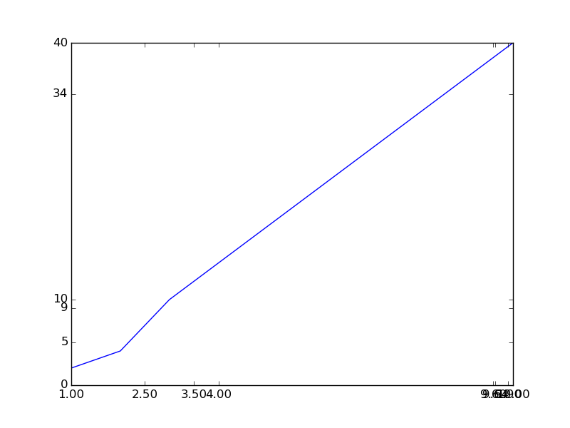
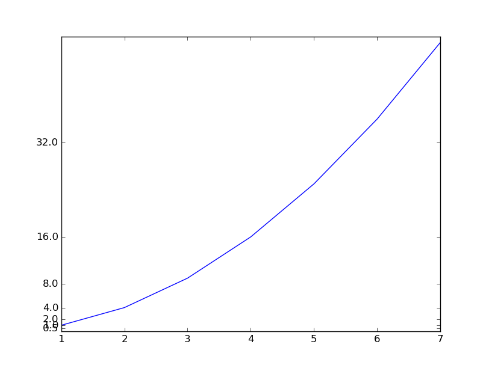

When we want to change the values of the ticks, we must access the set_xticks and set_yticks functions.
In the following code, we change the major tick and minor ticks of a plot.
import matplotlib.pyplot as plt
fig,ax=plt.subplots(1,1)
ax.plot([1,2,3,10],[2,4,10,40])
ax.set_xticks([1,2.5,3.5,4,9.6,9.64,9.9,10])
ax.set_yticks([0,5,9,10,34,39.999])
plt.show()
This code will produce the following figure
Thus we have changed the locations and values of the ticks. However, obviously, they look terrible.
Instead of doing it ourselves, matplotlib provides a variety of routines to do it for you. A detailed list is here.
import matplotlib.pyplot as plt
import matplotlib.ticker as tk
fig,ax =plt.subplots(1,1)
ax.plot([1,2,3,4,5,6,7],np.array([1,2,3,4,5,6,7])**2)
ax.yaxis.set_major_locator(tk.LogLocator(2))
ax.set_ylim(0,50)
plt.show()
This produces the following image.
There are a variety of automated ticks and using the tick_values() method of the ticket.Locator class, one obtains the list of ticks that would be produced.